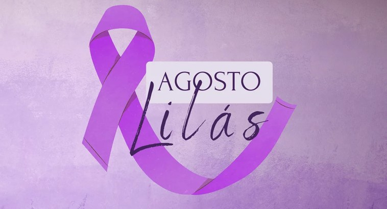

A violencia contra a mulher é um problema grave real que acontece todos os dias, muitas vezes acontece dentro de casa e é silenciosa, escondida, ignorada. Precisamos falar sobre isso e combater todas as formas de violencia.
Existente diferente tipos de violencia: fisica, pscicologica,moral, sexual e patrimonial. todas sao graves e causam muito sofrimento.
Denunciar é um ato de coragem, se voce precensiar ou sofrer, procure ajuda
Disque 180 Central de Atendimento a Mulher, fuciona
Campanha do agosto lilás.